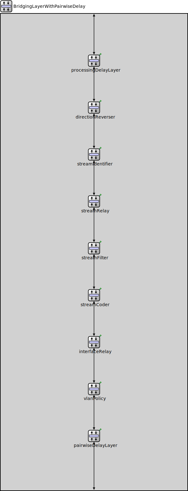

Package: d6g.pairwise
BridgingLayerWithPairwiseDelay
compound moduleThis module provides various layer 2 services such as packet forwarding, interface selection, virtual LAN handling, stream handling.
Usage diagram
The following diagram shows usage relationships between types. Unresolved types are missing from the diagram.
Inheritance diagram
The following diagram shows inheritance relationships for this type. Unresolved types are missing from the diagram.
Parameters
| Name | Type | Default value | Description |
|---|---|---|---|
| macTableModule | string | "" |
specifies the module handling the MAC address table. |
| interfaceTableModule | string |
relative module path of the interface table. |
Properties
| Name | Value | Description |
|---|---|---|
| display | i=block/layer |
Gates
| Name | Direction | Size | Description |
|---|---|---|---|
| upperLayerIn | input |
Input gate for receiving packets from the upper layer (e.g., network layer). |
|
| upperLayerOut | output |
Output gate for sending packets to the upper layer. |
|
| lowerLayerIn | input |
Input gate for receiving packets from the lower layer (e.g., MAC layer). |
|
| lowerLayerOut | output |
Output gate for sending packets to the lower layer. |
Source code
// // This module provides various layer 2 services such as packet forwarding, // interface selection, virtual LAN handling, stream handling. // module BridgingLayerWithPairwiseDelay like IProtocolLayer { parameters: string macTableModule = default(""); // specifies the module handling the MAC address table. string interfaceTableModule; // relative module path of the interface table. *.macTableModule = default(absPath(this.macTableModule)); *.interfaceTableModule = default(this.interfaceTableModule); @display("i=block/layer"); gates: input upperLayerIn; // Input gate for receiving packets from the upper layer (e.g., network layer). output upperLayerOut; // Output gate for sending packets to the upper layer. input lowerLayerIn; // Input gate for receiving packets from the lower layer (e.g., MAC layer). output lowerLayerOut; // Output gate for sending packets to the lower layer. submodules: // Layer responsible for adding delays to packet processing. processingDelayLayer: <default("")> like IProcessingDelayLayer { @display("p=300,150"); } // Handles the direction reversal of packets. directionReverser: <default("DirectionReverserLayer")> like IProtocolLayer { @display("p=300,300"); } // Manages stream identification operations. streamIdentifier: <default("")> like IProtocolLayer { @display("p=300,450"); } // Responsible for relay operations on the stream. streamRelay: <default("")> like IProtocolLayer { @display("p=300,600"); } // Applies filtering rules to the stream. streamFilter: <default("")> like IProtocolLayer { @display("p=300,750"); } // Encodes or transforms the stream. streamCoder: <default("")> like IProtocolLayer { @display("p=300,900"); } // Manages the relay operations at the interface level. interfaceRelay: <default("InterfaceRelayLayer")> like IProtocolLayer { @display("p=300,1050"); } // Manages VLAN policies. vlanPolicy: <default("")> like IProtocolLayer { @display("p=300,1200"); } // Adds delays to the packet on a pairwise basis, mainly for egress traffic. pairwiseDelayLayer: <default("ProcessingDelayLayer")> like IProcessingDelayLayer { @display("p=300,1350"); ingress.typename = default(""); egress.typename = default("PairwiseDelayer"); } connections: upperLayerIn --> processingDelayLayer.upperLayerIn; processingDelayLayer.lowerLayerOut --> directionReverser.upperLayerIn; directionReverser.lowerLayerOut --> streamIdentifier.upperLayerIn; streamIdentifier.lowerLayerOut --> streamRelay.upperLayerIn; streamRelay.lowerLayerOut --> streamFilter.upperLayerIn; streamFilter.lowerLayerOut --> streamCoder.upperLayerIn; streamCoder.lowerLayerOut --> interfaceRelay.upperLayerIn; interfaceRelay.lowerLayerOut --> vlanPolicy.upperLayerIn; vlanPolicy.lowerLayerOut --> pairwiseDelayLayer.upperLayerIn; pairwiseDelayLayer.lowerLayerOut --> lowerLayerOut; lowerLayerIn --> pairwiseDelayLayer.lowerLayerIn; pairwiseDelayLayer.upperLayerOut --> vlanPolicy.lowerLayerIn; vlanPolicy.upperLayerOut --> interfaceRelay.lowerLayerIn; interfaceRelay.upperLayerOut --> streamCoder.lowerLayerIn; streamCoder.upperLayerOut --> streamFilter.lowerLayerIn; streamFilter.upperLayerOut --> streamRelay.lowerLayerIn; streamRelay.upperLayerOut --> streamIdentifier.lowerLayerIn; streamIdentifier.upperLayerOut --> directionReverser.lowerLayerIn; directionReverser.upperLayerOut --> processingDelayLayer.lowerLayerIn; processingDelayLayer.upperLayerOut --> upperLayerOut; }File: src/pairwise/BridgingLayerWithPairwiseDelay.ned
 This documentation is released under the Creative Commons license
This documentation is released under the Creative Commons license